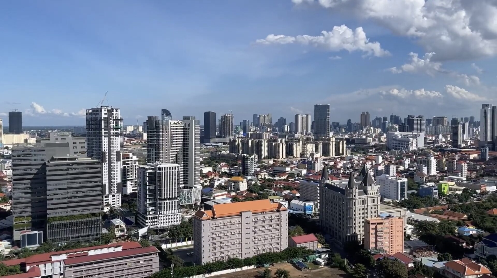
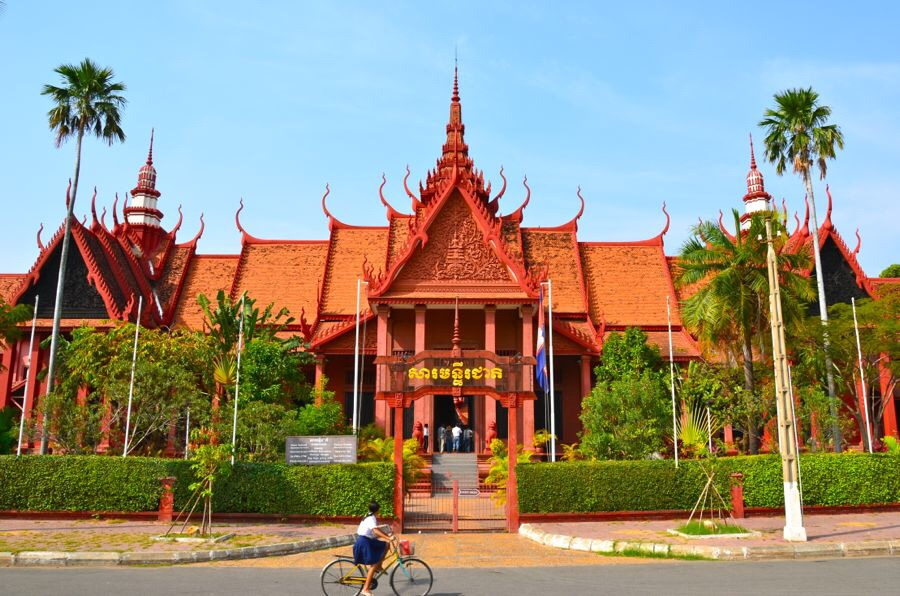
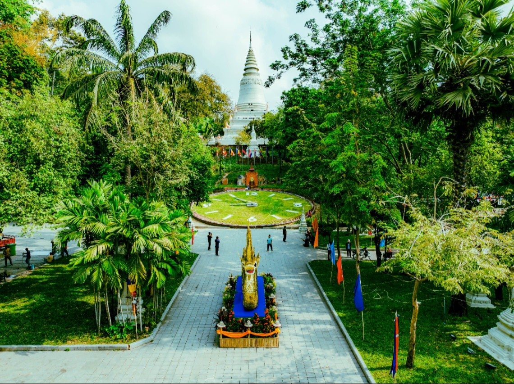

ភ្នំពេញ
ភ្នំពេញ គឺជារាជធានីរបស់ព្រះរាជាណាចក្រកម្ពុជា ដែលមានប្រជាជនរស់នៅច្រើនជាងមួយលាននាក់ និង ជាទីក្រុងធំលំដាប់ទី១ ដែលមានប្រជាជនរស់នៅច្រើនជាងគេក្នុងប្រទេសកម្ពុជា ។ ក្រុងភ្នំពេញ ជាមជ្ឈមណ្ឌលពាណិជ្ជកម្មដែលប្រមូលផ្ដុំទៅដោយ សំណង់អាគារលំនៅដ្ឋាន សាលារៀន មន្ទីពេទ្យ វត្តអារាម ទីផ្សារដោះដូរមុខទំនិញ លើមុខជំនួញជួញដូរ ទាំងក្នុងស្រុក និង ក្រៅស្រុក ក្នុងលំហូរសាច់ប្រាក់ជាអតិបរមា ដែលរួមបញ្ចូលទាំងសេដ្ឋកិច្ចទីផ្សារ សង្គមកិច្ច និង នយោបាយ ដែលនាំឱ្យទីក្រុងទាំងមូលក្លាយជាទីកន្លែងរស់នៅប្រកបដោយភាពសម្បូរបែប ។ឮ ទីក្រុងភ្នំពេញត្រូវបានបង្កើតឡើងដំបូងក្នុងរាជ ព្រះបរមរាជាទី១ នៃអង្គ ពញ្ញាយ៉ាត ដែលបានប្រកាសជាផ្លូវការ ក្នុងឆ្នាំ ១៤០០ នៃគ.ស ត្រូវនឹង ស.វទី១៥ ។ ក្រុងភ្នំពេញ បានចាប់ផ្ដើមសាងសង់ឡើងក្នុងឆ្នាំ ១៣៩៧ នៃគ.ស អំឡុងពេលដែលរាជធានីទួលបាសាន នាខេត្ត កំពង់ចាម ត្រូវបានទឹកជំនន់ជន់លិច ហើយព្រះរាជាបានផ្លាស់រាជធានីមកតំបន់ចតុមុខ ដើម្បីកសាងទីក្រុងនេះឡើង ដែលប្រើពេលសាងសង់អស់រយៈពេល ៣ឆ្នាំ ទើបញ្ចប់ក្នុងឆ្នាំ ១៤០០ នៃគ.ស ហើយទ្រង់បានប្រកាសរាជធានីថ្មីនេះថា "ក្រុងចតុមុខ មង្គលសកលកម្ពុជាធិបតី សិរីធរៈបវរ ឥន្ទបត្តបុរី រដ្ឋរាជសីមាមហានគរ" ដែលត្រូវបានហៅកាត់ថា "ក្រុងចតុមុខ" ។


រដ្ឋបាលភ្នំពេញ
រាជធានីភ្នំពេញ ចែកចេញជាខណ្ឌចំនួន ១៤ ដែលមានសង្កាត់ចំនួន ១០៥ ។ ក្នុងចំណោមខណ្ឌទាំង ១៤ នោះ គឺមានខណ្ឌ ២ ដែលទើបបង្កើតថ្មី កាលពីខែមករាកន្លងទៅ គឺខណ្ឌបឹងកេងកង និងខណ្ឌកំបូល។ ខណ្ឌថ្មីទាំង២ នោះ បានកាត់សង្កាត់មួយចំនួនពីខណ្ឌផ្សេងៗ ពោលគឺខណ្ឌបឹងកេងកង កាត់ ៧សង្កាត់ពីខណ្ឌចំការមន ចំណែកឯខណ្ឌកំបូល កាត់យក ៦សង្កាត់ពីខណ្ឌពោធិសែនជ័យ និង ១សង្កាត់ ពីខណ្ឌដង្កោ ។ សង្កាត់ទាំង ១០៥ ក្នុងខណ្ឌទាំង ១៤ របស់រាជធានីភ្នំពេញ រួមមានដូចខាងក្រោម៖
- ខណ្ឌចំការមន
- ខណ្ឌដូនពេញ
- ខណ្ឌ៧មករា
- ខណ្ឌទួលគោក
- ខណ្ឌដង្កោ
- ខណ្ឌមានជ័យ
- ខណ្ឌឫស្សីកែវ
- ខណ្ឌសែនសុខ
- ខណ្ឌពោធិ៍សែនជ័យ
- ខណ្ឌជ្រោយចង្វារ
- ខណ្ឌព្រែកព្នៅ
- ខណ្ឌច្បារអំពៅ
- ខណ្ឌបឹងកេងកង
- ខណ្ឌកំបូល
តំបន់ទេសចរណ៍
ព្រះបរមរាជវាំងកម្ពុជាព្រះបរមរាជវាំងកម្ពុជា (អង់គ្លេស: Royal Palace of Cambodia) គឺជាសំណង់អាគារដែលមានរចនាសម្ព័ន ជាព្រះរាជដំណាក់របស់អង្គព្រះមហាក្សត្រនៃកម្ពុជា ដែលទ្រង់គង់ប្រថាប់រស់នៅជាអចិន្ត្រៃយ៍ ។ ព្រះបរមរាជវាំងកម្ពុជា មានឈ្មោះពេញជាផ្លូវការណ៍ហៅថា "ព្រះបរមរាជវាំងចតុមុខ ព្រះបរមទេវតា" (Preah Borom Reacheaveang Chaktomuk Preah Borom Devata) តែដោយសាររាជវាំងមួយនេះឆ្លងកាត់នូវភ្លើងសង្គ្រាមអស់ជាច្រើនឆ្នាំ ទើបឈ្មោះដើមត្រូវបានគេបំភ្លេច និងត្រូវបានហៅជំនួសថា ព្រះបរមរាជវាំងចតុមុខសិរីមង្គល ។ ព្រះបរមរាជវាំងកម្ពុជា ចាប់ផ្ដើមសាងសង់ក្នុងឆ្នាំ ១៨៦៦ ហើយត្រូវបានបញ្ចប់ និងដាក់ឱ្យប្រើប្រាសជាផ្លូវការណ៍ នៅថ្ងៃទី ១៤ ខែកុម្ភៈ ឆ្នាំ ១៨៧០ ក្នុងរាជព្រះបាទ នរោត្តម ។

សារមន្ទីរជាតិ គឺជាសារមន្ទីរធំជាងគេនៅប្រទេសកម្ពុជា ដែលជាទីតាំងប្រមូលផ្ដុំសម្បត្តិវប្បធម៌និងប្រវត្តិសាស្ត្រដ៏សំខាន់។ សារមន្ទីរជាតិមានរក្សាទុករូបសំណាកនិងភស្ដុតាងប្រវត្តិសាស្ត្រកម្ពុជា ចំនួនជាង១ម៉ឺន៤ពាន់ តាំងពីសម័យបុរេប្រវត្តិ សម័យអង្គរ និង សម័យក្រោយៗមកទៀត។សារមន្ទីរជាតិ ស្ថិតនៅក្រោមការគ្រប់គ្រងរបស់ក្រសួងវប្បធម៌ និងវិចិត្រសិល្បៈកម្ពុជា។ អគារសារមន្ទីរ ដែលត្រូវបានបំផុសគំនិតដោយស្ថាបត្យកម្មប្រាសាទខ្មែរត្រូវបានសាងសង់នៅចន្លោះឆ្នាំ១៩១៧ និង ១៩២៤ ក្នុងរាជ្យរបស់ ព្រះបាទសម្ដេចព្រះស៊ីសុវត្ថិ សារមន្ទីរនេះត្រូវបានសម្ពោធជាផ្លូវការនៅឆ្នាំ១៩២០ ហើយត្រូវបានជួសជុលឡើងវិញនៅឆ្នាំ១៩៦៨។ សារមន្ទីរជាតិ ជាសារមន្ទីរប្រវត្តិសាស្ត្រវប្បធម៌ដ៏ចំណាស់និងធំបំផុត ក៏ជាសារមន្ទីរប្រវត្តិសាស្ត្រ បុរាណវត្ថុឈានមុខគេរបស់ប្រទេសផងដែរ។ សារមន្ទីរនេះមានបណ្តុំសិល្បៈខ្មែរដ៏ធំបំផុតមួយរបស់ពិភពលោក រួមទាំងចម្លាក់ វត្ថុមានតម្លៃ លង្ហិន និងស្ថាបត្យកម្មមួយចំនួនត្រូវបានរក្សាទុកនៅឯសារមន្ទីរជាតិនេះ។
រមណីយដ្ឋានប្រវត្តិសាស្ត្រ វត្តភ្នំ ជាសំណង់សាសនា មានកម្ពស់ ២៧ម៉ែត្រ ហើយជាប់ទាក់ទងនឹងប្រវត្តិនៃដាក់ឈ្មោះឱ្យរាជធានីភ្នំពេញផងដែរ។ បើតាមព័ត៌មានបង្ហាញលើផ្ទាំងថ្មក្នុងបរិវេណ “រមណីយដ្ឋានប្រវត្តិសាស្ត្រ វត្តភ្នំ” បញ្ជាក់ថា រមណីយនេះ ត្រូវបានស្ថាបនារួចរាល់ជាលើកដំបូងក្នុង ឆ្នាំ១៣៧៣ ពោលគឺបន្ទាប់ពីលោកយាយម្នាក់ឈ្មោះ “ពេញ” បានដឹកនាំអ្នកស្រុកពូនជាភ្នំ និងកសាងវិហារដើម្បីតម្កល់ពុទ្ធបដិមាករ ៤អង្គ ដែលគាត់ បានប្រទះឃើញនៅក្នុងដើមគគីរអណ្តែតមកជិតច្រាំងទន្លេ ក្នុងឆ្នាំ១៣៧២។ តួយ៉ាង ក្រោយកសាងរួច គេហៅថា «វត្តភ្នំដូនពេញ» តែក្រោយមកក៏ហៅ កាត់ត្រឹម «វត្តភ្នំ» វិញ។ លុះឆ្នាំ១៤៣៤ ព្រះបាទ ពញាយ៉ាត បានមកតាំងរាជធានីថ្មីនៅទីនេះ ដោយយកឈ្មោះ ភ្នំរបស់លោកយាយពេញ ជានាមឱ្យក្រុងថ្មី គឺ “ភ្នំពេញ”។ ប្រវត្តិរាជធានីភ្នំពេញ “ក្រុងចតុមុខមង្គល សកលកម្ពជាធិបតី សិរីធរ បវរ ឥន្ទបត្តបុរី រដ្ឋរាជ សីមា មហានគរ” ឬ ហៅឱ្យងាយស្ដាប់ថា រាជធានីភ្នំពេញ ត្រូវបានកសាង ដំបូងនៅក្នុងសតវត្សន៍ទី១៥ ក្នុងអំឡុងរជ្ជកាលព្រះបាទស្រីសុរិយាពណ៌ ដែលត្រូវបានគេស្គាល់ថា “ព្រះបាទពញ្ញាយ៉ាត” រាជបុត្រារបស់ព្រះបាទស្រីសុរិយាវង្ស និងជាព្រះរាជាមួយអង្គ ដែលបានរំដោះក្រុងអង្គរជាលើកទី២ ពីកណ្តាប់ដៃសៀម បន្ទាប់ពីបិតារបស់ព្រះអង្គ។ យោងតាមឯកសារសៀវភៅប្រវត្តិសាស្រ្តដែលចងក្រងដោយលោក អាដេម៉ារឡឺក្លែ អតីតរ៉េស៊ីដង់បារាំងប្រចាំកម្ពុជា បញ្ជាក់ថា មុននឹងឈានដល់ ការសម្រេចចិត្តតាំងរាជធានីនៅភ្នំពេញ ព្រះអង្គបានចុះចាកពីរាជធានីអង្គរ ក្នុងឆ្នាំ១៤៣២ មកតាំងនគរនៅបន្ទាយទាហានចាស់បិតាទ្រង់ នៅទួលបាសានក្នុង ខេត្តស្រីសរឈរ ដែលសព្វថ្ងៃនេះ គេហៅថាស្រុកស្រីសន្ធរ ខេត្តកំពង់ចាម។ ឯក្រុងថ្មីនៅទីនោះត្រូវបានទ្រង់ប្រទាននាមឲ្យថា« ក្រុងស្រីសន្ធរបវររាជធានី» ។ លុះឆ្នាំ១៤៣៤ ព្រះបាទ ពញាយ៉ាត បានមកតាំងរាជធានីថ្មីនៅទីនេះ ដោយយកឈ្មោះ ភ្នំរបស់លោកយាយពេញ ជានាមឱ្យក្រុងថ្មី គឺ “ភ្នំពេញ ” ព្រមទាំងបានកសាងចេតិយមួយធំ ដើម្បីតម្កល់ព្រះធាតុព្រះញាតិវង្សព្រះអង្គថែមទៀតផង៕
